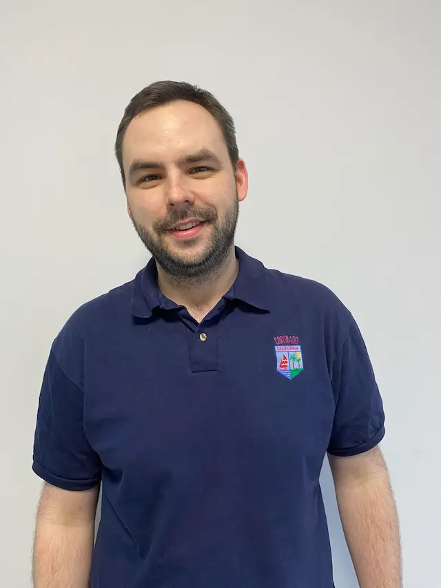
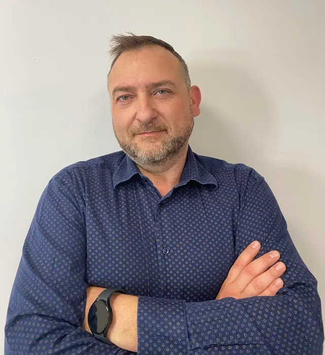

Poznaj zespół naszych placówek
Fizjoterapeuta
mgr Rafał Babecki
Kierownik Rehabilitacji

Fizjoterapeuta
mgr Rafał Babecki
Kierownik Rehabilitacji
Absolwent kierunku fizjoterapii Warszawskiego Uniwersytetu Medycznego. Swoje doświadczenie zdobywał w czasie pracy z pacjentami ze schorzeniami ortopedycznymi oraz sportowcami. Współpracował z polską kadrą łyżwiarstwa szybkiego. Jego pracę charakteryzuje indywidualne podejście do człowieka, oraz skupianie się na funkcjonowaniu jego organizmu jako całości. Poza gabinetem spełnia się jako mąż i ojeciec aktywnie spędzając czas z rodziną.
Ukończone kursy i szkolenia:- Terapia manualna Rakowskiego
- PNF rozszerzony
- USG dla fizjoterapeutów „Sonografia, sonofeedback oraz terapia”
- Kinezjologia Taping
- Postępowanie fizjoterapeutyczne w terapii blizn
- Pinoterapia FRSc
Fizjoterapeuta
mgr Wiktor Korotko
Ukończył studia na kierunku fizjoterapii w Warszawskim Uniwersytecie Medycznym. Posiada wieloletnie doświadczenie w pracy z młodzieżą i dorosłymi pacjentami. Sukcesywnie powiększa swoją wiedzę o nowe techniki diagnozy oraz leczenia dolegliwości. Specjalizuje się w rehabilitacji ortopedycznej i terapii manualnej. Wolny czas spędza z rodziną na przejażdżkach motocrossowych.
Ukończone kursy i szkolenia:- „Kręgosłup-osteopatyczna diagnostyka i leczenie”
- „Terapia trzewna”
- Maitland Concept – metoda terapii manualnej
- USG dla fizjoterapeutów - Sonofeedback
- MTT- medyczny trening terapeutyczny
- „Współczesne metody diagnozy i leczenia tkanek miękkich”
- „Stawy obwodowe”
- Masaż klasyczny
Fizjoterapeuta
mgr Wiktor Korotko

Fizjoterapeuta
mgr Marta Kalisiak
Fizjoterapeuta
mgr Marta Kalisiak
Ukończyła studia magisterskie w Wyższej Szkole Rehabilitacji w Warszawie. Aktywna zawodowo od 2012 roku. Swój rozwój skierowała w stronę pacjentów ortopedycznych, pooperacyjnych (terapia blizny) i z przeciążeniem układu mięśniowego. W wolnych chwilach relaksuje się przy dobrej książce a pozytywną energię czerpie z wędrówek po górach.
Ukończone kursy i szkolenia:- Osteopatyczna Diagnostyka i Leczenie Kręgosłupa
- USG dla fizjoterapeutów „Sonografia, sonofeedback oraz terapia”
- Dry Needling w koncepcji FRSc (Igłoterapia sucha)
- Praca na bliznach – integracja blizn z siecią powięziową
- Fibroliza mięśniowo-powięziowa (Haczykowanie)
- BeBo – terapia dna miednicy
- Masaż klasyczny
Fizjoterapeuta
mgr Małgorzata Korotko
Ukończyła dzienne studia na kierunku fizjoterapii w Warszawskim Uniwersytecie Medycznym. Nieustannie pogłębia swoją wiedzę z zakresu fizjoterapii w pediatrii, neurologii dziecięcej i ortopedii, by skutecznie pomagać dzieciom. Najbardziej interesuje ją terapia niemowląt z dysharmonią rozwojową i zaburzeniami neurorozwojowymi, terapia dzieci i młodzieży z problemami neurologicznymi genetycznymi, ortopedycznymi, a także dysfunkcjami w zakresie procesów integracji sensorycznej, korekcja wad postawy i skolioz. Wolne chwile poświęca na dobry film lub książki.
Ukończone kursy i szkolenia:- Terapia neurorozwojowa NDT Bobath
- I i II stopień z zakresu teorii i terapii integracji sensorycznej
- Szkolenie z zakresu terapii wad postawy układu kostno- stawowego u dzieci i młodzieży według koncepcji FITS
- Masaż głęboki
- Szkolenie z zakresu technik rozluźniania i pracy w obrębie tkanek miękkich
- Narzędzia M-CHAT-R/F – praktyczne zastosowanie w monitorowaniu rozwoju dziecka
Fizjoterapeuta
mgr Małgorzata Korotko
Fizjoterapeuta
mgr Małgorzata Chądzińska
Terapeuta
mgr Małgorzata Chądzińska
Pedagog specjalny oraz terapeuta integracji sensorycznej z wyksztalceniem kierunkowym zdobytym na WSP TWP na kierunku pedagogika resocjalizacyjna i socjalna. Absolwentka studiów podyplomowych z zakresu Rehabilitacji dzieci z dysfunkcjami rozwojowymi. Posiada szerokie doświadczenie w pracy terapeutycznej z dziećmi o zróżnicowanych potrzebach rozwojowych i zdrowotnych, w tym z zaburzeniami ze spektrum autyzmu, mózgowym porażeniem dziecięcym oraz zespołami genetycznymi. Pracowała w wyspecjalizowanych placówkach terapeutycznych , gdzie prowadziła zarówno zajęcia indywidalne, jak i terapię wieloprofilowaną. W Polskim Instytucie Trenerskim uzyskała kwalifiację instruktora gimnastyki korekcyjnej, a w Instytucie Masgutowej ukończyła I i II stopień terapii neurotaktylnej, poszerzając kompetencje w zakresie wspierania rozwoju psychoruchowego dzieci. Łączy wiedzę z obszaru pedagogiki specjalnej, terapii sensomotorycznej i rehabilitacji, oferując profesjonalne, holistyczne podejście do dziecka i jego rodziny.
Zespół opieki stacjonarnej
- lek. Alina Korotko - medycyna rodzinna, dyrektor medyczny OSOM
- Jolanta Makarewicz - opiekun medyczny
- Dorota Wichrowska - opiekun medyczny
- Iwona Dąbrowska - opiekun medyczny
- Marcin Sokołowski - opiekun medyczny
- Aneta Bartosewicz - asystent osób starszych
Zespół administracyjny
- Ewelina Godleś - księgowa
- Ewa Saulewicz - opiekun medyczny
- Anna Makarewicz - kierownik rejestracji
- Urszula Tarach - rejestratorka medyczna
- Katarzyna Jabłońska - rejestratorka medyczna
TEMP NZOZ DERBY TEST CONTENT
TEMP HIPOTERAPIA TEST CONTENT